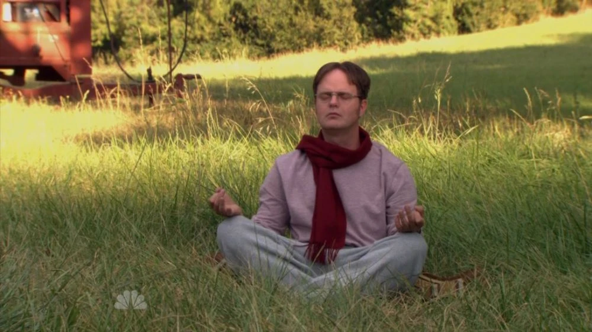

iniciando...
nada tocando
escolhe um disco

Bears. Beets. Battlestar Galactica.
abrem quando o relógio zerar
faltam:
25 de novembro, 17h.
essa ainda tá trancada.
salvo com sucesso.
nanda.os, versão 2.